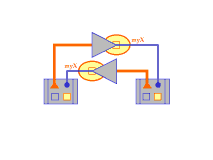

At each step in this walkthrough, the object being discussed and the source code being executed are highlighted.
-
public static void main(String args[])
main is called on DemoRoller.
-
DieRoller rollerOne = new DieRoller();
main declares rollerOne, of eclass DieRoller. When rollerOne is created, only DemoRoller holds any references to it.
-
DieRoller rollerTwo = new DieRoller();
main declares rollerTwo. In this example, rollerOne and rollerTwo will both be running on the same machine, but the construction of eclass DieRoller allows rollerOne and rollerTwo to be on different machines connected by a network.
-
EInteger rollerOneHash, rollerOneX;
 main declares the EIntegers rollerOneX, which will contain rollerOne's random number X, and rollerOneHash, which will contain the hash of rollerOneX. These EIntegers act as channels (large triangles) for storage and forwarding of values "in transit".
main declares the EIntegers rollerOneX, which will contain rollerOne's random number X, and rollerOneHash, which will contain the hash of rollerOneX. These EIntegers act as channels (large triangles) for storage and forwarding of values "in transit".
-
EInteger rollerTwoHash, rollerTwoX;
 main declares the EIntegers rollerTwoHash and rollerTwoX.
main declares the EIntegers rollerTwoHash and rollerTwoX.
-
rollerOne <- doDieRoll(&rollerOneHash,
&rollerOneX, rollerTwoHash, rollerTwoX);
DemoRoller sends the message doDieRoll to rollerOne. The two distributors &rollerOneX and &rollerOneHash
are passed to rollerOne to enable it to reveal information to rollerTwo. The parameters rollerTwoHash and rollerTwoX will reveal to rollerOne information from rollerTwo.
-
rollerTwo <- doDieRoll(&rollerTwoHash,
&rollerTwoX, rollerOneHash, rollerOneX);
Similarly, DemoRoller sends the message doDieRoll to rollerTwo . The two distributors &rollerTwoX and &rollerTwoHash
are passed to rollerTwo to enable it to reveal information to rollerOne. The parameters rollerOneHash and rollerOneX will reveal to rollerTwo information from rollerOne.
The order of the delivery of the two doDieRoll messages is not guaranteed -- either could get it first, or they could be delivered at the same time. The remainder of this walkthrough shows identical events happening to rollerOne and rollerTwo simulaneously, although the two dieRollers could perform their actions in either order.
-
At this point, DemoRoller has done its job. Now each of the DieRollers executes the doDieRoll emethod. We'll trace the path of execution in one, bearing in mind that identical events are happening in the other.
-
emethod doDieRoll (EDistributor myHash, EDistributor myX, EInteger hisHash, EInteger hisX) {
Each of the DieRollers receives the doDieRoll message, with parameters provided for them to communicate with each other.
-
emethod doDieRoll (EDistributor myHash, EDistributor myX, EInteger hisHash, EInteger hisX) {
The message objects, having set up the conditions for each DieRoller to do its computation, can also be garbage-collected. Each DieRoller now has the distributors it needs to reveal its own information to the other (myX, myHash) and the EIntegers that will deliver the corresponding data from the other (hisX, hisHash).
-
long X = randomGenerator.nextLong();
Each DieRoller chooses a random number X.
-
myHash <- forward(new EInteger(OneWayHash(X)));
Each DieRoller reveals the hash of its X by forwarding it to myHash (highlighted triangle). This value is shown here "in transit".
-
ewhen hisHash (long otherHash) {
Having executed all code outside of its ewhen block, each DieRoller then executes its outer ewhen statement. Basically, it says, "When hisHash gets a value, assign its value to otherHash and execute the following code block." The highlighted rectangle shown represents the lexical scope of the outer ewhen code block.
-
ewhen hisHash (long otherHash) {
If any communications latency is involved (if, for example, the two DieRollers are on different machines), DieRoller waits at this point. All execution that does not depend on the hisHash value has proceeded. The highlighted arrow represents the pending ewhen, with a reference to the lexical closure containing the data it will act on.
-
ewhen hisHash (long otherHash) {
When hisHash reveals a value, the ewhen block is reactivated. DieRoller has completed execution of doDieRoll; it terminates and is garbage-collected. The ewhen proceeds.
-
ewhen hisHash (long otherHash) {
 The channel created for myHash has fulfilled its reason for existing; no other messages will be sent on it now that DieRoller has been garbage-collected, so it can go away as well. The code block's lexical scope is within that of the original DieRoller, so X is known within this closure as well (highlighted box).
The channel created for myHash has fulfilled its reason for existing; no other messages will be sent on it now that DieRoller has been garbage-collected, so it can go away as well. The code block's lexical scope is within that of the original DieRoller, so X is known within this closure as well (highlighted box).
-
ewhen hisHash (long otherHash) {
The activation of the block inside the ewhen means the ewhen can go away; an ewhen executes only once. (An ewhenever processes multiple events.)
-
ewhen hisHash (long otherHash) {
The revealed value of hisHash is assigned to otherHash (highlighted square) and the outer ewhen code block proceeds as follows:
-
myX <- forward(new EInteger(X));

The random integer X (highlighted square), which has been secret until now, is wrapped in an EInteger object and forwarded to myX (highlighted triangle). It is "in transit," and will be received as hisX.
-
ewhen hisX (long otherX) {
As earlier with the outer ewhen statement, a new lexical closure is created with the data to be processed in the inner ewhen block, pending the revelation of hisX. The inner ewhen statement says "When hisX is revealed, execute the following block of code."
-
ewhen hisX (long otherX) {
The highlighted arrow represents the inner ewhen statement, with a reference to its associated lexical closure. It activates when hisX is revealed (highlighted circle).
-
ewhen hisX (long otherX) {
The code block associated with the outer ewhen has fulfilled its function and can be garbage-collected.
-
ewhen hisX (long otherX) {
The inner ewhen proceeds. The channel transmitting the value of hisX can go away, since nothing else can be sent on it.
-
ewhen hisX (long otherX) {
The code block is activated, with otherX taking the value revealed as hisX.
-
{
long finalResult = Combine(X, otherX);
System.out.println("Roll result = " + finalResult);
if (OneWayHash(otherX) != otherHash) {
System.out.println("There was cheating.");
}
}
The final result is calculated and printed, unless someone cheated, in which case that is reported.
The protocol has been completed.
 main declares the EIntegers rollerOneX, which will contain rollerOne's random number X, and rollerOneHash, which will contain the hash of rollerOneX. These EIntegers act as channels (large triangles) for storage and forwarding of values "in transit".
main declares the EIntegers rollerOneX, which will contain rollerOne's random number X, and rollerOneHash, which will contain the hash of rollerOneX. These EIntegers act as channels (large triangles) for storage and forwarding of values "in transit".
 main declares the EIntegers rollerTwoHash and rollerTwoX.
main declares the EIntegers rollerTwoHash and rollerTwoX.